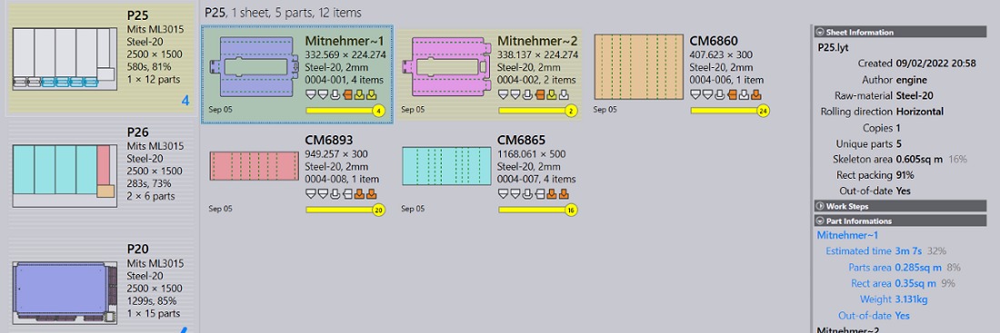
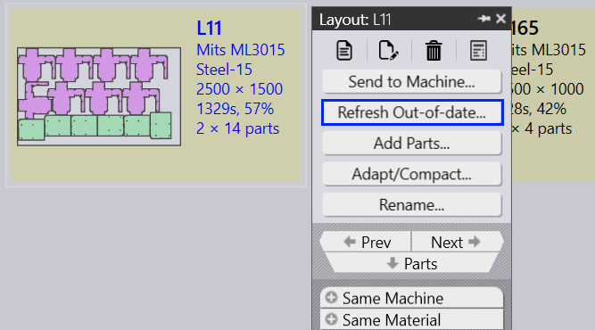
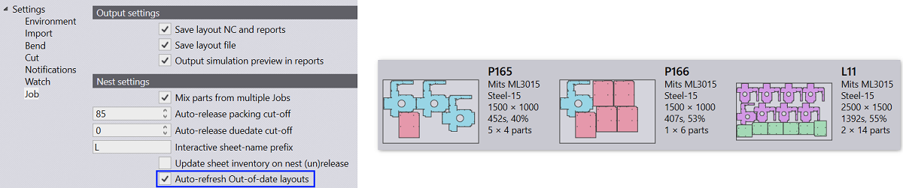
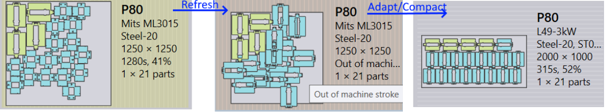

When a part is imported in Praxis, it checks if a part with same name and content already exists. The import is skipped, if the part already exists and the content (or revision where applicable) is same. The existing content is replaced with the new one if they are different. Praxis also checks if the part is already nested in the active layouts (yet to be produced) or static nests (layouts assigned to Praxis Assemblies).
● The Layouts are marked out-of-date if such layouts are found. The out-of-date (dirty) layouts are rendered with the light-yellow background.
● Praxis also flags the part-in-a-layout entry as out-of-date. This is set for a particular part when a layout is marked dirty due to the part revision. The parts are in the layout are also drawn with light-yellow background to highlight their out-of-date status.

The Refresh Out-of-date… command can be used to refresh such out-of-date layouts with the revised parts. This command is available with waiting, out-of-date layouts, and kit nests. The refresh operation replaces the existing part instance in the layout with the new revision. This is an in-place replacement with no nest topology update. Use this command when the outer part contour stays same across the part revisions.
A Out-of-date Layouts selection filter has been added to select all out-of-date layouts in a single click and work with them.

Check Auto-refresh Out-of-date layouts available in factory • settings • job • nest settings to automate layout refresh. When checked, Praxis refreshes all out-of-date layouts linked to a part after its cutting solutions are calculated.

The refresh, when the outer part contour is updated, may result in part overlap or overflow outside the machine stroke. Use Adapt/Compact to force the renest and fix overlap/overflow issues. Errors can also be fixed by editing the layouts.
